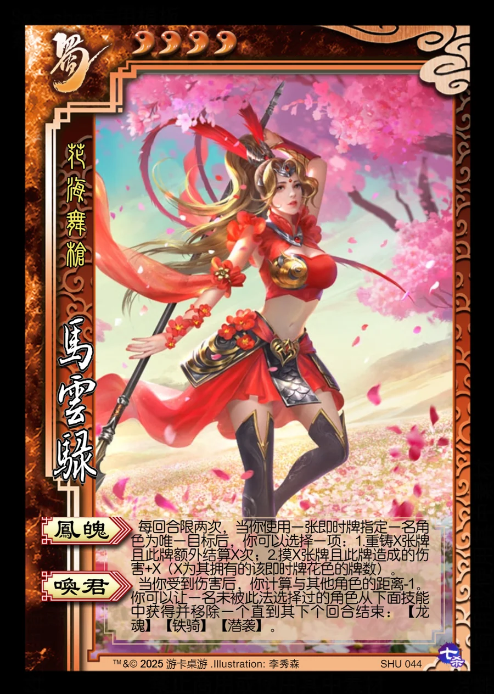

点击卡面查看大图
蜀
马云騄
♥4花海舞枪
凤魄
每回合限两次，当你使用一张即时牌指定一名角色为唯一目标后，你可以选择一项：1.重铸X张牌且此牌额外结算X次；2.摸X张牌且此牌造成的伤害+X（X为其拥有的该即时牌花色的牌数）。
唤君
当你受到伤害后，你计算与其他角色的距离-1。你可以让一名未被此法选择过的角色从下面技能中获得并移除一个直到其下个回合结束：【龙魂】【铁骑】【潜袭】。

点击卡面查看大图
花海舞枪
每回合限两次，当你使用一张即时牌指定一名角色为唯一目标后，你可以选择一项：1.重铸X张牌且此牌额外结算X次；2.摸X张牌且此牌造成的伤害+X（X为其拥有的该即时牌花色的牌数）。
当你受到伤害后，你计算与其他角色的距离-1。你可以让一名未被此法选择过的角色从下面技能中获得并移除一个直到其下个回合结束：【龙魂】【铁骑】【潜袭】。